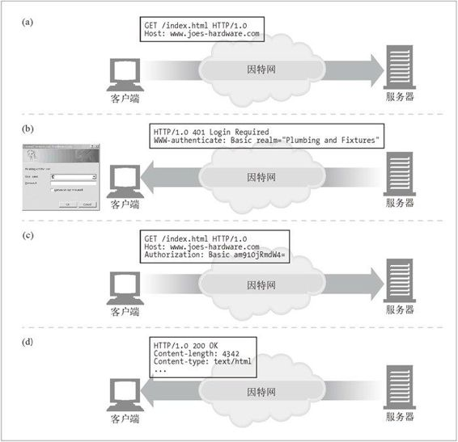

11.4 用户登录
Web 服务器无需被动地根据用户的 IP 地址来猜测他的身份，它可以要求用户通过用户名和密码进行认证（登录）来显式地询问用户是谁。
为了使 Web 站点的登录更加简便，HTTP 中包含了一种内建机制，可以用 WWW-Authenticate 首部和 Authorization 首部向 Web 站点传送用户的相关信息。一旦登录，浏览器就可以不断地在每条发往这个站点的请求中发送这个登录信息了，这样，就总是有登录信息可用了。我们将在第 12 章对这种 HTTP 认证机制进行更加详细的讨论，现在我们先来简单地看一看。
如果服务器希望在为用户提供对站点的访问之前，先行登录，可以向浏览器回送一条 HTTP 响应代码 401 Login Required。然后，浏览器会显示一个登录对话框，并用 Authorization 首部在下一条对服务器的请求中提供这些信息。1 图 11-2 对此进行了说明。
1 为了不让用户每发送一条请求都要登录一次，大多数浏览器都会记住某站点的登录信息，并将登录信息放在发送给该站点的每条请求中。

图 11-2 用 HTTP 认证首部注册用户名
此图中发生的情况如下所述。
在图 11-2a 中，浏览器对站点 www.joes-hardware.com 发起了一条请求。
站点并不知道这个用户的身份，因此在图 11-2b 中，服务器会返回 401 Login Required HTTP 响应码，并添加 WWW-Authentication 首部，要求用户登录。这样浏览器就会弹出一个登录对话框。
只要用户输入了用户名和密码（对其身份进行完整性检查），浏览器就会重复原来的请求。这次它会添加一个 Authorization 首部，说明用户名和密码。对用户名和密码进行加密，防止那些有意无意的网络观察者看到。2
2 在第 14 章我们会看到，任何有这种想法的人，不用费多大事就可以轻易地将 HTTP 基本的认证用户名和密码破解出来。稍后将讨论一些更安全的技术。
现在，服务器已经知道用户的身份了。
今后的请求要使用用户名和密码时，浏览器会自动将存储下来的值发送出去，甚至在站点没有要求发送的时候也经常会向其发送。浏览器在每次请求中都向服务器发送 Authorization 首部作为一种身份的标识，这样，只要登录一次，就可以在整个会话期间维持用户的身份了。
但是，登录多个 Web 站点是很繁琐的。Fred 从一个站点浏览到另一个站点的时候，需要在每个站点上登录。更糟的是，可怜的 Fred 很可能要为不同的站点记住不同的用户名和密码。他访问很多站点的时候，他最喜欢的用户名 fred 可能已经被其他人用过了，而且有些站点为用户名和密码的长度和组成设置了不同的规则。Fred 很快就会放弃上网，回去看奥普拉（Oprah）的脱口秀了。下一节我们来讨论这个问题的解决方案。